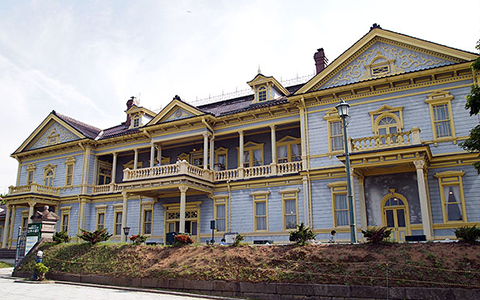
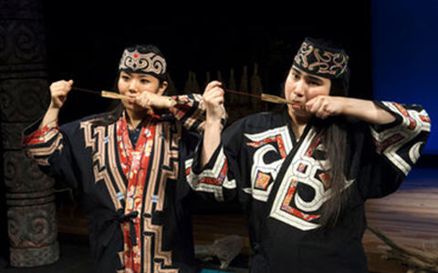

北海道の他の文化体験
洋館
海道の西洋建築は、箱館港の開港とともにはじまる。貿易港をもつ函館には、 西洋の文化や技術がいち早く取り入れられ、 日本人のための洋館や和洋折衷の建物が次々と登場。 明治後期には、コロニアルスタイルの旧函館区公会堂など、 北海道の風土に合わせた洋館が日本人の建築家によって建てられた。元町界隈は、 今も異国情緒が保たれている。 函館以外にも洋式ホテルとして建設された札幌の豊平館（ほうへいかん）、 小樽には旧日本郵船小樽支店や旧日本銀行小樽支店、 旭川には将校たちの社交場として造られた旧第七師団偕行社などが残る。
ムックリ
アイヌ民俗の楽器。日本語では口琴という。長さ10～15センチ、 幅1センチほどの薄い竹製で、中央に切れ目（リード）があり、 その根元に結ばれた小さな棒付きの糸を引っ張ると切れ目が振動し 「ビョーン、ビョーン」という音が出る。 竹を口に当てて口内に振動を共鳴させ、口の形や呼吸の変化によって さまざまな音色が生まれる。 同時に複数の音を出したり、音程を変えたり、メロディーをつけることも可能。 単純な楽器だが、音を出すのは難しい。 ムックリは儀式などで使うものではなく、私的に音を体感し、心地よさを楽しむもの。 みやげとして阿寒湖のアイヌコタン（アイヌの集落）などで買える。